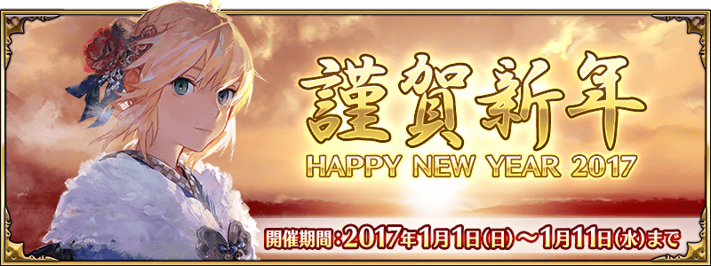
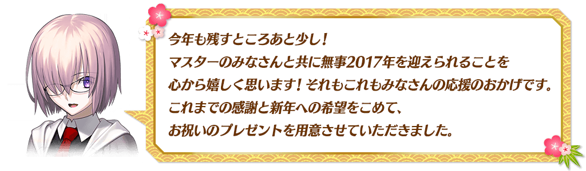
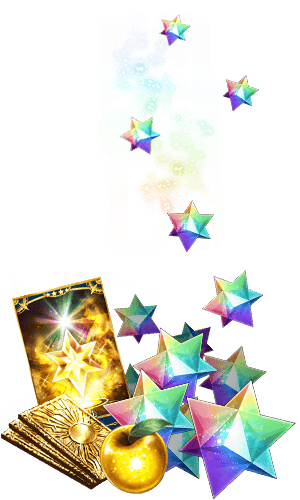
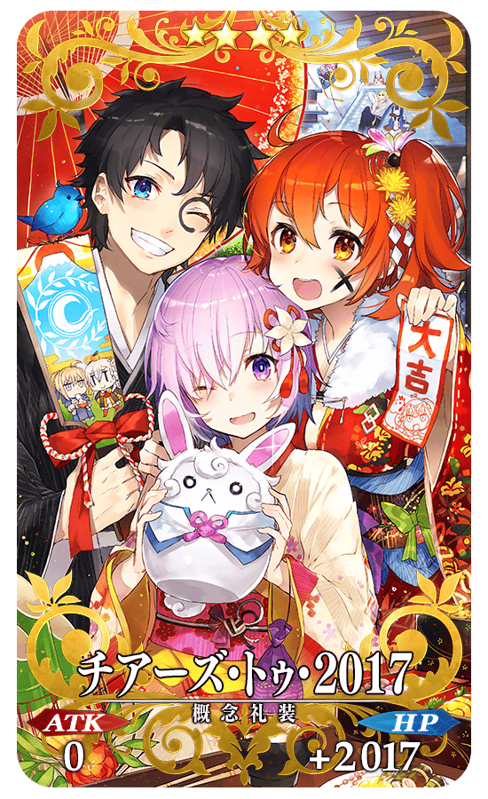
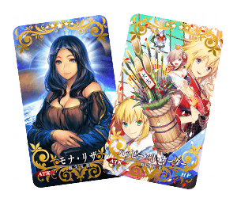
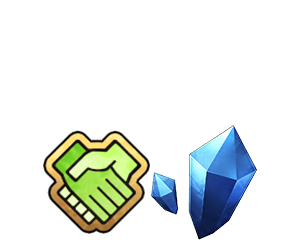
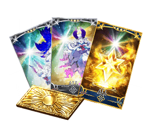
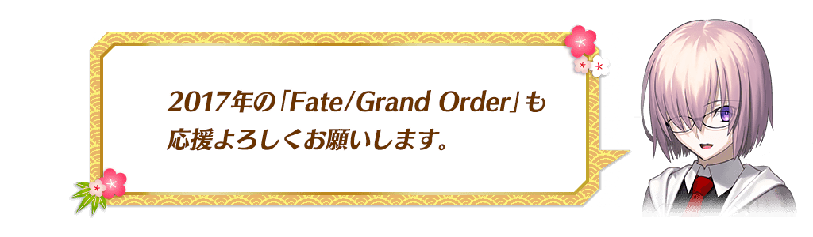

|
給各位Master的壓歲錢！ ◆宣傳活動舉辦期間◆ ◆宣傳活動對象者◆ ◆禮物內容◆ ◆領取條件◆ |
 |
從營運送來的賀年卡！
為了慶祝新年，贈送全員新年限定的概念禮裝！
◆對象期間◆
2017年1月1日(日) AM3:00～1月12日(四) AM2:59
◆贈送對象者◆
在上述期間遊玩Fate/Grand Order的玩家
◆禮物內容◆
|  |
★★★★SR チアーズ・トゥ・2017 ATK 0 HP 2017(最大：2017) 技能 對自身賦予每回合HP100回復狀態 |
◆領取條件◆
2017年1月1日(日) AM3:00～1月12日(四) AM2:59的期間中，在首次進行登入時，贈送到禮物箱。
※期間內沒登入的話無法領取。
※禮物只能領取1次。
在達文西工房的「稀有稜鏡交換」及「魔力稜鏡交換」，追加交換道具。
|
◆追加道具◆ ※關於有交換過的「モナ・リザ」，只會開放未交換的份量。(交換過4張的話只開放1張份量) |
 |
另外，★5(SSR)概念禮裝「モナ・リザ」，交換必要的魔力稜鏡變更如下。
| 舊交換數 | 新交換數 |
|---|---|
| 第1張 1,000個 | 1,000個 |
| 第2張 1,200個 | 1,000個 |
| 第3張 1,400個 | 1,000個 |
| 第4張 1,600個 | 1,000個 |
| 第5張 1,800個 | 1,000個 |
隨著這個，在舊交換數時交換「モナ･リザ」，會返還差額魔力稜鏡到禮物箱。
※12月31日(六)23:00以後，初次登入時，給予至禮物箱。
|
◆追加道具◆ |
 |
※上述道具能以17個魔力稜鏡交換。
※QP、友情點數直接給予到所持道具。不送至禮物箱。
◆交換期間◆
2016年12月31日(六) 23:00～1月11日(三) 13:59
另外，一部份道具的在庫數以期間限定變成2倍！
|
◆對象道具◆ |
 |
※為可交換次數變成2倍的宣傳活動。
※每1次的交換數及交換魔力稜鏡數不會變更。
◆交換期間◆
2016年12月31日(六) 23:00～1月31日(二) 22:59
在迦勒底之門出現的曜日關卡「種火集め」的初級、中級、上級、超級的AP消費量，以期間限定變成1/2！
◆舉辦期間◆
2016年12月31日(六) 23:00～1月11日(三) 13:59まで
◆對象關卡◆
種火集め＜槍・殺編＞ 初級、中級、上級、超級
種火集め＜剣・騎編＞ 初級、中級、上級、超級
種火集め＜弓・術編＞ 初級、中級、上級、超級
種火集め＜隨機編＞ 初級、中級、上級、超級
【種火集め 關卡的難易度等】
| 難易度 | 推薦Lv | 消費AP | 初回通過報酬 |
|---|---|---|---|
| 初級 | 10 | 10→5 | 魔力稜鏡ｘ1 |
| 中級 | 25 | 20→10 | 魔力稜鏡ｘ2 |
| 上級 | 40 | 30→15 | 魔力稜鏡ｘ3 |
| 超級 | 60 | 40→20 | 魔力稜鏡ｘ4 |
※關卡通過報酬的魔力稜鏡是只有初次通過時才能獲得。
由於通過報酬每週都會重置，每週不斷通過，持續入手報酬「魔力稜鏡」吧。
◆曜日關卡攻略的重點◆
參考攻略推薦職階参考組成隊伍，挑戰曜日關卡！

※曜日別關卡的詳細如下。
【曜日別關卡一覧】
| 曜日 | 關卡名 | 做為戰利品可獲得的主要道具 | 攻略推薦職階 |
|---|---|---|---|
| 一 | 弓の修練場 | Archer的靈基再臨用道具、Archer的技能強化素材道具 |  |
| 種火集め <槍・殺編> AP1/2
|
Lancer、Assassin、Berserker的經驗值卡 |   |
|
| 二 | 寶物庫の扉を開け | QP |  |
| 槍の修練場 | Lancer的靈基再臨用道具、Lancer的技能強化素材道具 | |
|
| 種火集め <剣・騎編> AP1/2
|
Saber、Rider、Berserker的經驗值卡 |   |
|
| 三 | 狂の修練場 | Berserker的靈基再臨用道具、Berserker的技能強化素材道具 | ALL |
| 種火集め <弓・術編> AP1/2
|
Archer、Caster、Berserker的經驗值卡 | |
|
| 四 | 寶物庫の扉を開け | QP | |
| 騎の修練場 | Rider的靈基再臨用道具、Rider的技能強化素材道具 | |
|
| 種火集め <槍・殺編> AP1/2
|
Lancer、Assassin、Berserker的經驗值卡 | |
|
| 五 | 術の修練場 | Caster的靈基再臨用道具、Caster的技能強化素材道具 | |
| 種火集め <剣・騎編> AP1/2
|
Saber、Rider、Berserker的經驗值卡 | |
|
| 六 | 寶物庫の扉を開け | QP | |
| 殺の修練場 | Assassin的靈基再臨用道具、Assassin的技能強化素材道具 | |
|
| 種火集め <弓・術編> AP1/2
|
Archer、Caster、Berserker的經驗值卡 | |
|
| 日 | 寶物庫の扉を開け | QP | |
| 剣の修練場 | Saber的靈基再臨用道具、Saber的技能強化素材道具 | |
|
| 種火集め <隨機編> AP1/2
|
Saber、Archer、Lancer、Rider、Caster、Assassin、Berserker的經驗值卡(隨機) | – |
在進行Servant及概念禮裝的強化時，大成功(經驗值2倍加成)・極大成功(經驗值3倍加成)發生機率以期間限定變成2倍。
無論如何藉此機會強化中意的Servant和概念禮服吧！
◆舉辦期間◆
2016年12月31日(六) 23:00～1月11日(三) 13:59

為了從這時才開始遊戲的玩家，起跑宣傳活動大幅翻新成聖晶石召喚合計23次份等！
除了能得到最多聖晶石40個(聖晶石召喚13次份)外，還能GET呼符10張(聖晶石召喚10次份)，可以友點召喚的友情點數，做為經驗值道具的叡智の大火 ALL★3(R)，做為AP回復道具的黄金の果実等，在遊戲有用的道具！
◆翻新實施日◆
2017年1月1日(日) AM3:00～
◆領取方法◆
■其1.關卡通過
通過教學後聖晶石2個，通過序章更有聖晶石10個！
合計能GET12個(聖晶石召喚4次份)！
■其2.登入獎勵
從遊戲開始，7天間登入來GET！
登入獎勵合計：能GET聖晶石28個(聖晶石召喚9次份)、呼符10張(聖晶石召喚10次份)、友情點數合計14,000pt(友情點數召喚70次份)、叡智の大火 ALL★3(R)16張、黄金の果実16個、100萬QP！
| 登入天數 | 新起跑宣傳活動 | 舊起跑宣傳活動 |
|---|---|---|
| 1日目 | 聖晶石 1個 友情點數 2,000pt 叡智の大火 ALL★3(R) 1張 黄金の果実 1個 |
聖晶石 1個 友情點數 2,000pt 叡智の大火 ALL★3(R) 1張 |
| 2日目 | 聖晶石 2個 友情點數 2,000pt 叡智の大火 ALL★3(R) 1張 黄金の果実 1個 |
聖晶石 2個 友情點數 2,000pt 叡智の大火 ALL★3(R) 1張 |
| 3日目 | 聖晶石 3個 友情點數 2,000pt 叡智の大火 ALL★3(R) 1張 黄金の果実 1個 |
聖晶石 3個 友情點數 2,000pt 叡智の大火 ALL★3(R) 1張 |
| 4日目 | 聖晶石 4個 友情點數 2,000pt 叡智の大火 ALL★3(R) 1張 黄金の果実 1個 |
聖晶石 4個 友情點數 2,000pt 叡智の大火 ALL★3(R) 1張 |
| 5日目 | 聖晶石 5個 友情點數 2,000pt 叡智の大火 ALL★3(R) 1張 黄金の果実 1個 |
聖晶石 5個 友情點數 2,000pt 叡智の大火 ALL★3(R) 1張 呼符 1張 |
| 6日目 | 聖晶石 6個 友情點數 2,000pt 叡智の大火 ALL★3(R) 1張 黄金の果実 1個 |
聖晶石 6個 友情點數 2,000pt 叡智の大火 ALL★3(R) 1張 呼符 1張 |
| 7日目 | 聖晶石 7個 友情點數 2,000pt 叡智の大火 ALL★3(R) 10張 呼符 10張 黄金の果実 10個 100萬QP |
聖晶石 7個 友情點數 2,000pt 叡智の大火 ALL★3(R) 1張 呼符 1張 黄金の果実 1個 10萬QP |
